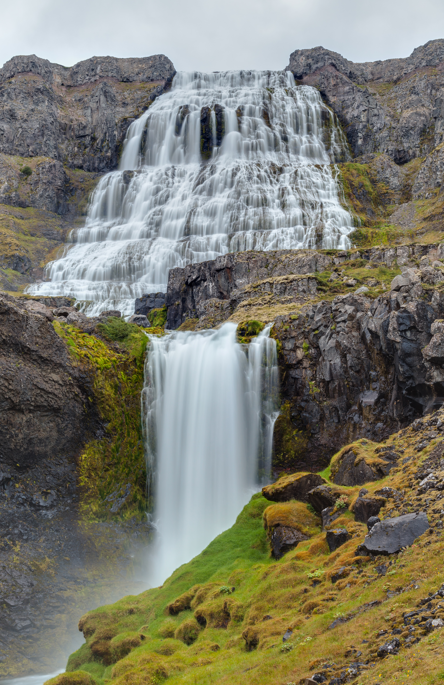

the trail goes on for a little while and it takes you and your friends a little over an hour to get to the waterfall.The trail is mostly flat them It starts to slope up slowly and as it does the sounds in the forest start to shift from birds chirping to water slashing on to rocks. As you go over the top of the hill the waterfall comes into view below you. It is just as beautiful as you expect it to be withthe sunshine reflecting off the water making it sparkle. It even has a swimming hole at the top of the falls which looks to be about 6 ft deep and after a hike in the hot humid forest a swim sounds quite refreshing. though you don't have much time until dark. Should you
Swim in the waterfall or Go back to camp

Diego Delso, delso.photo, License CC BY-SA